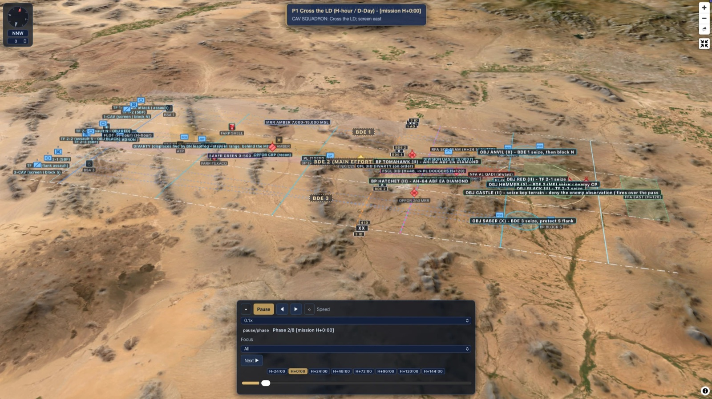

20+
Years Defense Experience
A Service-Disabled Veteran-Owned Small Business bridging operational experience and corporate execution - solutions that are both tactically sound and professionally precise.
Strategic Task Solutions, LLC (STS) is headquartered in Merritt Island, Florida. We provide mission-ready defense consulting, professional services, and cleared key personnel to U.S. Government prime contractors, DoD and DoW agencies, Federal agencies, and State agencies.
Our leadership team has stood up organizations from concept to full operational capability, accelerated revenue growth, and managed full P&L accountability across ISR fleet operations supporting DoD and Federal customers across all branches and commands. We have operated in austere combat environments and directed enterprise-level programs, bringing that same standard of execution to every engagement.
Our size is our advantage. We move at a pace and with a flexibility that most companies simply cannot match - from fires integration and Full Spectrum ISR Ecosystem development to international partner capacity building, curriculum development, and business development capture.

STS is a verified Service-Disabled Veteran-Owned Small Business, and that is more than a certification. It means partnering with a team that brings operationally proven leadership, active clearances, and real execution capability to every engagement.
Our SDVOSB status enables prime contractors to meet set-aside and subcontracting requirements while gaining a high-performing partner who delivers. For Government customers, STS offers a streamlined path to mission-critical expertise through VA sole-source awards and DoD set-aside vehicles - without sacrificing capability or capacity.
Our leadership and cadre bring experience earned at the program, operational, and command level - the same standard of execution we bring to every engagement.
Our team has owned full P&L across ISR fleet operations on DoD and allied-nation contracts - accelerating revenue growth and managing ISR payload modification and certification to Part 91, Part 135, and DCMA 8210.1D standards.
Our people have directed deployed ISR operations supporting Joint Special Operations Forces in active combat theaters, managing personnel, flight operations, logistics, and senior military customer relations with a 100% mission success record.
Our subject-matter experts have directed full-spectrum air-to-ground integration and targeting, ISR program management, and JCAS evaluation exercises in theater.
Our leaders have commanded operational squadrons and led standards and evaluations across Bosnia, Kosovo, Kuwait, Afghanistan, and Iraq - carrying 20+ years of full-spectrum Air-to-Ground Integration.